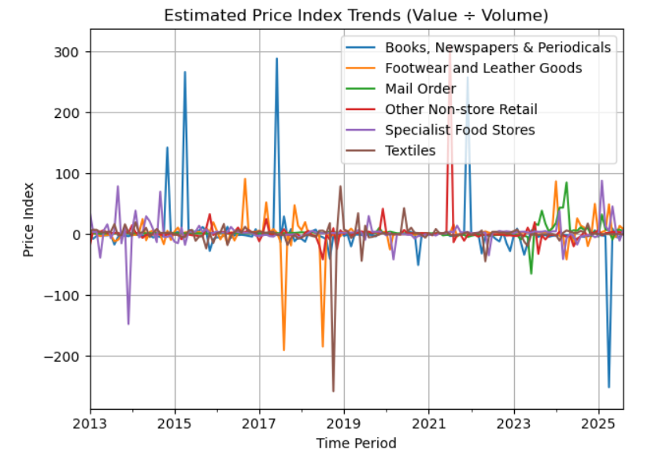

This project explores how retail sectors in the UK have evolved from 2013 to 2025, focusing on post-pandemic recovery and ethical alignment. By combining the Office for National Statistics’ Retail Sales Index (RSI) with a typology of town centre identities, the analysis identifies which sectors are resilient, volatile, and culturally embedded — and how these patterns can inform future planning.
Comparative scoring across resilience, volatility, and ethical alignment
Introduction
Retail is a vital component of UK town centres, shaping economic vitality and community identity. The COVID-19 pandemic disrupted retail patterns, accelerating digital formats and challenging traditional ones. This project investigates how different retail sectors have responded to these shifts and whether their trajectories align with ethical and cultural values.
I chose this research question because it blends economic analysis with social relevance. It’s a strong candidate for a data-driven solution due to the availability of time series data (RSI) and qualitative typology data (Pen Portraits), allowing for both quantitative scoring and interpretive mapping.
Methods
Data sources include the ONS Retail Sales Index and Typology of Town Centres...

Estimated Price Index Trends (Value ÷ Volume) for selected sectors (2013–2025)
Results
Mail Order showed strong growth but low ethical alignment. Specialist Food Stores scored high across all dimensions...
Conclusion
This project demonstrates how combining quantitative retail data with qualitative typology insights can reveal deeper patterns in sector resilience and ethical alignment. The scoring framework offers a replicable method for evaluating retail formats, while the visualisations support strategic decision-making.